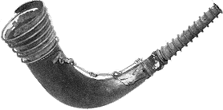

|
|
Välkommen till Barva! |
|


| Barva-luren |
 |
I en monter på Historiska museet i Stockholm finns en gammal lur från Barva.
1880 gjorde torparen Carl Johan Johansson i Stenstugan ett märkvärdigt fynd. I ett kärr mellan Källudden och Stenstugan fann han den sk. Barva-luren. Carl Johan Johansson fick hela 25 kr i hittelön, vilket säkert var mycket pengar för en torpare. (Jmf: en ko kostade ca 45-60 kr.)
I början 1980-talet gjorde hembygdsföreningen tillsammans med Kalle Friberg, som brukade Källudden 1928-42, nya undersökningar för att hitta fyndplatsen. Man trodde från Historiska museets sida, att hornet var ett offerfynd och att det kunde finnas mer fynd på samma plats. Men tyvärr hittades ingenting denna gång!
Musikarkeolog Cajsa S. Lund lät göra en kopia av Barva-luren. Kopian var med i en filmpremiär av en vikingafilm och vid invigningen av Eketorps borg på Öland.
Även ljudet spelades in på en LP-skiva av "Fornnordiska klanger". Hornet låter som en tjurs brölande!
Luren/hornet är en, med bronsbeslag belagd stridslur, troligen från en uroxe, skodd i båda ändarna med långa, vackert bearbetade beslag av brons och förenade med en kedja med fint utformade länkar av brons, ca 70 cm långt.
Troligen har luren/hornet offrats i mossen för nästan 2000 år sedan. Under äldre järnåldern offrades vapen i mossar eller i grunda sjöar.
Kanske barvaborna kallades till krigiska uppdrag eller till hedniska riter för ca 2000 år sedan med detta horn?/Anne